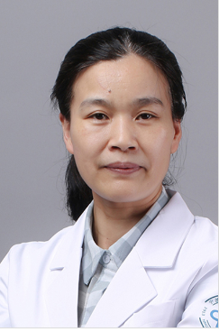

医师团队

宁波大学附属第一医院于2023年3月1日经宁波市委机构编制委员会办公室批准，由原宁波市第一医院与原宁波大学医学院附属医院(宁波市第三医院)整合组建而成。
医院是浙江省三级甲等综合性医院，浙江省区域医疗中心，连续3年全国三级综合性公立医院绩效考核排名进入前百位，现设置月湖、方桥、外滩三个院区，总建筑面积40.03万㎡，核定床位3900张。其中宁波市公共卫生临床中心项目计划于2024年竣工，届时三个院区总建筑面积将达到60.8万㎡，总床位将超过5350张。
医院设有浙江省博士后科研工作站和院士工作站，是宁波大学医学博士和硕士培养单位，是国家级首批住培基地，是国际紧急救援中心网络医院、国家爱婴医院、国家罕见病诊疗协作网医院，也是国家脑卒中筛查与防治基地、中国胸痛中心、宁波市老年医学中心、宁波市危重孕产妇救治中心、宁波市中毒急救中心等授牌或挂靠单位。目前，医院全面托管5家县区级医院，对口帮扶4家县区级医院。
医院现有职工总数5068人（含编制外1006人），其中，副高级职称以上1002人，博士及博士后131人，硕士1245人。 医院拥有2个国家临床重点建设专科，1个省重点扶持学科，4个省市共建医学重点学科，6个浙东区域专病中心，3个宁波市品牌学科，9个宁波市医学重点学科，11个宁波市医学重点扶植学科，1个省级医学研究重点实验室，3个市级医学研究重点实验室，3个市级临床医学研究中心，中医科为全国综合性医院示范中医科，6个市级慢病管理临床指导中心和11个市级质控中心。
更多专家介绍
邬秀娣
主任医师 风湿科
边学燕
主任医师 肾内科
王铜亮
主任医师 眼科

丁慧青
主任技师 妇产科